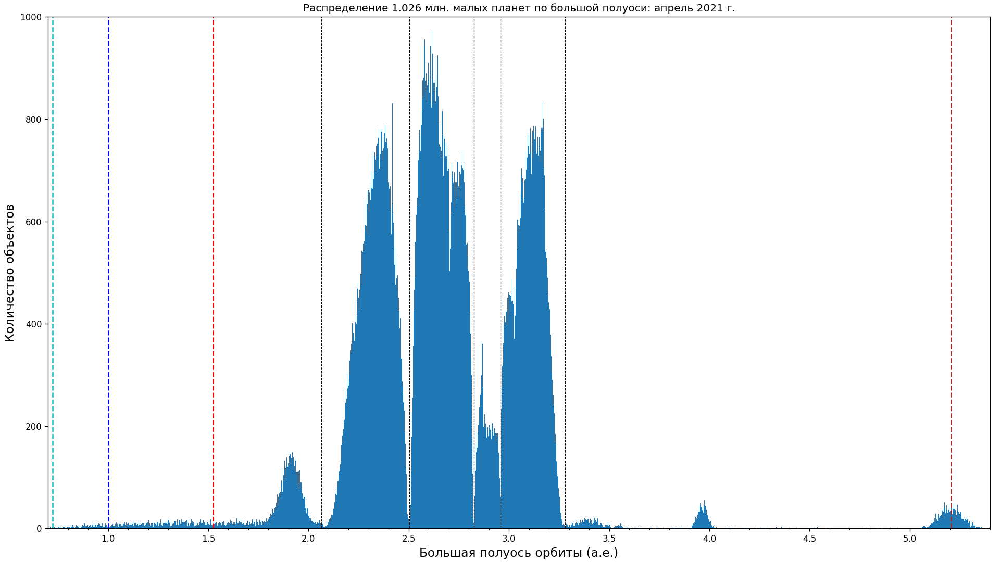

Статистика тел Солнечной системы
Центра Малых планет
- 345158939 наблюдений
- 1198489 объектов всего
- Более 614690 нумерованных малых планет
- 579391 ненумерованных малых планет
- 4408 комет
- Более 23187 малых планет с именами (последнее обновление списка: 2022 May 2)
- 54 Атир, 2226 Атонов, 14753 Аполлонов, 11871 Амуров, 29240 астероидов семейства Венгрии, 19494 пересекающих орбиту Марса;
- 1117261 астероидов основного пояса, 5387 астероидов семейства Хильды, 11955 троянцев Юпитера, 4711 объектов за орбитой Юпитера;
- 28906 околоземных астероидов, из них 873 больше 1 км, 2276 потенциально опасных астероидов, 110 околоземных комет.
Всего в статистике околоземных астероидов от 2022-May-05: 28885
Распределение малых планет, количество в зависимости от большой полуоси (вертикальные линии - большие полуоси планет и щели Кирквуда):

Список транснептуновых объектов
Альтернативная статистика Johnston's Archive, Last updated 1 September 2021.:
- Астероидов*: 1,112,918 (585,075 numbered, 527,843 provisional),
- Объектов внешней Солнечной системы*: 3,893 (882 numbered, 3,011 provisional, 34 without official designations),
- Комет**: 6996 (394 numbered**, 3,816 with provisional designations, 2,786 without official designations).
- Искусственных объектов: As of 28 November 2020, man-made objects in the solar system include an estimated 325 orbiting the Sun, 6 orbiting Venus, 18 orbiting Mars, 1 each orbiting (1) Ceres, Jupiter, and Saturn, and 8 escaping the solar system. This is mentioned here since several objects tracked as minor planets are believed to be spent rocket boosters or other man-made objects: 2010 KQ, 2018 AV2, 2020 SO, and J002E3.
* Note: "dwarf planet" is a new classification invented by the International Astronomical Union (IAU) in August 2006. At that time the IAU declared Pluto a dwarf planet but not a planet, and also classified (136199) Eris and (1) Ceres as dwarf planets. In July 2008 (136472) Makemake was declared the fourth dwarf planet, and in September 2008 (136108) Haumea the fifth. Though those classifications are still disputed, these five objects are not included here in the counts of asteroids and outer solar system objects, and Pluto is not included in the count of planets. At least one more outer solar system object, (225088) Gonggong, should be in this group, but since the IAU has not applied their definition in this case it is not counted here as a dwarf planet.
Counts are based primarily on data from: the Minor Planet Center web site; The Catalogue of Cometary Orbits 1999 (Marsden and Williams); The Catalogue of Cometary Orbits 2005 (Marsden and Williams); Cometography, Vol. I (Kronk, 1999); International Comet Quarterly web site; the National Space Science Data Center web site; the Solar and Heliospheric Observatory web site; and the web site for the Asteroid Orbital Elements Database (Bowell) on Lowell Observatory's web site.
* Note: Long-period comets with no official designation include: 2,248 SOHO comets, 87 STEREO comets, 2 other modern comets, and 449 pre-modern comets. The pre-modern comets typically have no computed orbits.
Статистика тел Солнечной системы
группы динамики Солнечной системы.
Последнее обновление: 2022-05-06 10:07:02 UTC.
- 210 спутников планет (включая Луну и спутники Плутона);
- 3796 комет, 523 numbered, 3273 unnumbered;
- 1206479 астероидов, 614690 numbered, 591789 unnumbered.
Астероиды и кометы, измеренные при помощи радара
Asteroid radar research, NASA Jet Propulsion Laboratory, Caltech.
1179 Radar-Detected Asteroids and Comets.
Последнее обновление: 4 May 2022.
- 138 астероидов главного пояса,
- 1020 околоземных астероидов,
- 21 комет.
Near-Earth Asteroid Files:


Астероиды со спутниками
by Wm.
Robert Johnston. Последнее обновление: 23 April 2022.
463 астероидов и транснептуновых объектов со спутниками:
447 двойных, 14 тройных систем, 1 шестерная система (Плутон);
1 компонентов всего:
- 87 околоземных астероидов (3 с двумя спутниками каждый).
- 31 астероидов, пересекающих орбиту Марса (1 с двумя спутниками).
- 217 астероидов главного пояса (1 с двумя спутниками каждый,
1 binary with dual comet designation).
- 6 троянских астероидов Юпитера.
- 122 транснептуновых объектов (2 с двумя спутниками,
1 с пятью спутниками; count excludes 1 object with rings).